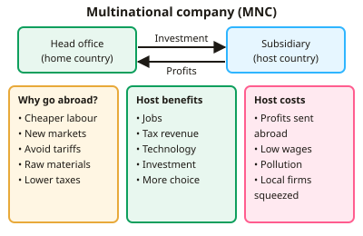

GCSE Economics · Topic 8
International Trade and the Global Economy
This topic looks at how countries trade with each other, and how the global economy connects us all.
We will cover globalisation and multinationals, protectionism and trading blocs, and how exchange rates affect trade.
Then we look at the balance of payments, with case studies of the UK and China.
- 4 subtopics
- 207 questions
- Free: 8.1 notes and 10 questions
In this topic
- 8.1Globalisation, multinational companies and the benefits and costs of tradeFree below · 59 questions
- 8.2Protectionism, tariffs, quotas and trading blocsOpen in Full Marks · 34 questions
- 8.3Exchange rates: causes of change and effects on tradeOpen in Full Marks · 75 questions
- 8.4Balance of payments, trade balance and case study of the UK or China's tradeOpen in Full Marks · 39 questions
8.1 · Free notes
Globalisation, multinational companies and the benefits and costs of trade

Key points
- Globalisation is the growing integration and interdependence of national economies through trade, investment, finance, labour movement and technology.
- Main drivers: falling transport costs (e.g. containerisation), ICT and the internet, trade liberalisation (WTO, trading blocs), the growth of multinational companies and the rise of emerging economies such as China and India.
- A multinational company (MNC) operates in more than one country. It has its HQ in the home country and subsidiaries in host countries (e.g. Nissan in Sunderland, Apple, Unilever).
- Why MNCs locate abroad: lower labour costs, access to new markets, avoiding trade barriers such as tariffs, access to raw materials, and lower taxes or regulation.
- Benefits of MNCs to host countries: jobs, tax revenue, foreign direct investment (FDI), technology transfer and skills, greater choice and lower prices, and higher exports.
- Costs of MNCs to host countries: profit repatriation, low wages or poor working conditions, environmental damage, tax avoidance, and local firms being crowded out. MNCs can also relocate if costs rise (they are 'footloose').
- Specialisation and trade based on comparative advantage (producing at the lowest opportunity cost) raise total world output. Countries can then consume more than they could without trade.
- Benefits of trade: wider consumer choice, lower prices, economies of scale from bigger markets, more competition and efficiency, and jobs in export industries.
- Costs of trade: structural unemployment in industries that cannot compete, over-specialisation and dependence on one product, damage to infant industries, and environmental costs from transport.
- Visible trade is trade in goods. Invisible trade is trade in services such as tourism, banking and insurance. Trade balance = exports − imports: a positive figure is a surplus, a negative figure is a deficit.
- Openness measure: exports as % of GDP = (exports ÷ GDP) × 100. Services such as finance and business services are a large share of UK exports. The EU is the UK's largest trading partner and the USA its largest single-country partner.
In more detail
- Worked comparative advantage: in a day the UK can make 10 cars or 20 computers, and Vietnam 2 cars or 10 computers. A car costs the UK 2 computers but Vietnam 5, so the UK should specialise in cars and Vietnam in computers.
- Worked openness: UK exports of £850bn and GDP of £2,700bn → exports ≈ 850 ÷ 2,700 × 100 ≈ 31% of GDP.
- MNC example: Nissan's car plant in Sunderland employs around 6,000 people directly, with many more jobs in its supply chain.
- Exam tip: evaluate MNCs from the viewpoint of the host country, the home country and workers, because benefits and costs fall on different groups.
Practice
Globalisation, multinational companies and the benefits and costs of trade: 10 questions
Pick an answer to check it, or open the answer for the explanation.
1. What is meant by globalisation?
- The growing integration and interdependence of national economies
- A government policy of restricting imports
- The growth of a single country's output
- A fall in the general price level worldwide
Show answer
A: The growing integration and interdependence of national economies. Globalisation is the increasing integration of economies through trade, investment, finance, migration and technology, making countries more interdependent.
2. Which best defines a multinational company (MNC)?
- A firm that only exports goods overseas
- A firm that sells shares on a stock exchange
- A firm owned by several governments
- A firm with operations in more than one country
Show answer
D: A firm with operations in more than one country. An MNC has production or service operations in two or more countries, usually with its headquarters in a home country and subsidiaries in host countries.
3. Which is a likely benefit to a host country when an MNC opens a factory there?
- Profits are always kept within the host country
- Local firms face no competition
- Creation of jobs and extra tax revenue
- Lower demand for local suppliers
Show answer
C: Creation of jobs and extra tax revenue. Host countries gain employment, tax receipts, investment and technology transfer. Profits are often repatriated and local firms may face more competition.
4. Which is a cost of MNCs to a host country?
- Profits repatriated to shareholders abroad
- Technology transfer to local workers
- Greater export earnings
- Higher employment
Show answer
A: Profits repatriated to shareholders abroad. Repatriated profits leave the host economy, so less of the income created stays to be spent or invested locally. The other options are benefits.
5. A country exports £420bn of goods and services and imports £480bn. What is its trade balance?
- £900bn deficit
- £60bn surplus
- £60bn deficit
- £480bn deficit
Show answer
C: £60bn deficit. Trade balance = exports − imports = £420bn − £480bn = −£60bn. This is a £60bn deficit because imports exceed exports.
6. Why do countries specialise according to comparative advantage?
- To maximise tariffs on imports
- To make every product themselves
- To avoid trading with other countries
- To produce what they can make at the lowest opportunity cost
Show answer
D: To produce what they can make at the lowest opportunity cost. Specialising in goods with the lowest opportunity cost and then trading raises total output, so countries can consume more than without trade.
7. A Japanese carmaker builds a new plant in Sunderland. This is an example of:
- Imposing a quota
- A UK export of services
- Foreign direct investment into the UK
- Import substitution
Show answer
C: Foreign direct investment into the UK. FDI is investment by a foreign firm in physical assets abroad. Building a plant in the UK is inward FDI, a common MNC activity.
8. Which has been a major driver of globalisation?
- Higher transport costs
- Rising tariffs worldwide
- Growth of internet and communications technology
- Banning foreign direct investment
Show answer
C: Growth of internet and communications technology. Fast, cheap communications and falling transport costs (e.g. containerisation), plus lower trade barriers, let firms organise production across borders.
9. A country's exports rose from 20% of GDP in 2000 to 35% in 2020. This suggests the economy has:
- Reduced its reliance on international markets
- Become less open to trade
- Become more open and integrated into world trade
- Run a trade surplus every year
Show answer
C: Become more open and integrated into world trade. A rising exports-to-GDP ratio shows trade is more important to the economy, i.e. greater openness. It does not show a surplus, as imports are not given.
10. A US tourist spends £2,000 on a hotel in London. For the UK this is:
- A transfer of FDI
- An import of services
- An export of services (invisible export)
- An import of goods
Show answer
C: An export of services (invisible export). Foreign spending on UK-provided services brings money into the UK, so it counts as a service (invisible) export.
Keep going in Full Marks
Full Marks has 59 questions on Globalisation, multinational companies and the benefits and costs of trade (49 more than here), set out in practice levels. You also get notes and 3D models for all 4 subtopics of International Trade and the Global Economy, plus games, timed exams and past papers.